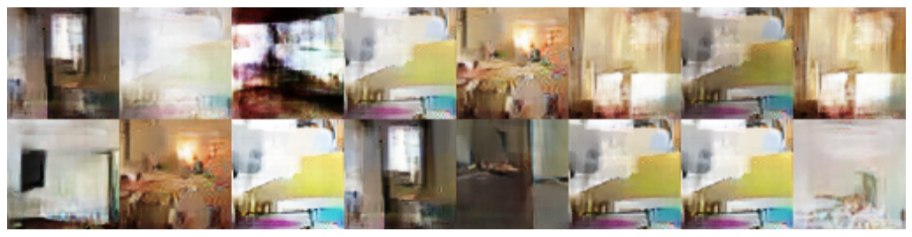
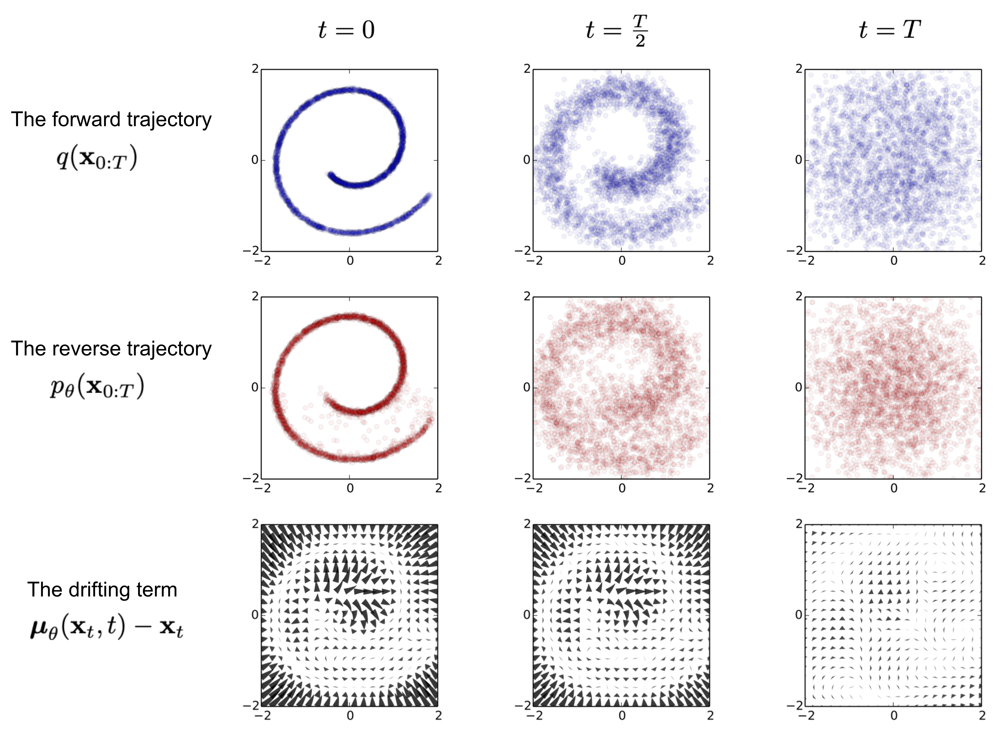

Generative AI with JAX
2025-10-01


Generative Adversarial Networks (GANs)

\[\min_G \max_D \mathbb{E}_{x\sim p_\text{data}}[\log D(x)] + \mathbb{E}_{z\sim p(z)}[\log(1 - D(G(z)))]\]
- Loss function
- Generator: produces samples G(z) to fool D
- Discriminator: estimates real vs fake probability D(·)
Advantages and Limitations
- Advantages: sharp samples; flexible implicit modeling; no explicit likelihood.
- Limitations: unstable training; mode collapse; sensitive to architecture and tricks.
Limitations with GANs
Unstable learning

Mode collapse

Vanishing gradients

Some possible solutions
- Use WGAN for more stable training and stronger gradients.
- Add gradient penalty (WGAN-GP) to keep the critic smooth.
Variational Autoencoders (VAEs)

VAE takeaways
- VAE learn optimal compression into the latent space
- Represents a dataset by an easy to sample gaussian distribution
- Compared to GAN gives a better access to probability distribution
- Produces blurrier images than GANs
Evidence Lower Bound (ELBO):
\[\mathcal{L} = \mathbb{E}_{q_\phi(z|x)}[\log p_\theta(x|z)] - \text{KL}(q_\phi(z|x)\|p(z))\]
- Reconstruction: decoder quality
- KL Divergence: latent regularization
Reparameterization trick: \[z = \mu + \sigma \odot \epsilon, \quad \epsilon \sim \mathcal{N}(0,I)\]
VAE in Cosmology (Deblending)

Normalizing Flows (Flow-based Generative Models)

Mappings: \(f(x) \to y\), \(g(y) = z\); \(z = g_{\theta}(x) = g_K \circ \cdots \circ g_1(x)\)
Log-likelihood
\[\log p_{\theta}(x) = \log p_Z\big(g_{\theta}(x)\big) + \sum_{k=1}^{K} \log \left|\det J_{g_k}\right|\]
Rezende & Mohamed (2015)
In short
- Gaussianize data: \(z = g_{\theta}(x) \approx \mathcal{N}(0, I)\).
- Exact likelihood: \(\log p_{\theta}(x) = \log p_Z(z) + \sum_k \log|\det J_{g_k}|\).
- Generate via inverse: \(x = f_{\theta}(z)\), \(z \sim p_Z\).
Coupling Layers : Forward vs Inverse

Coupling layer computation graph
Forward (x → y)
- Split \(x=(x_a, x_b)\) by mask.
- Conditioning network on kept half: \((s, t) = \text{NN}(x_a)\).
- Affine update (element-wise):
\[ y_a = x_a, \qquad y_b = x_b \odot e^{s(x_a)} + t(x_a). \]
Inverse (y → x)
Given \((y_a, y_b)\):
- Recompute \((s, t) = \text{NN}(y_a)\).
- Invert the affine on the transformed half:
\[ x_a = y_a, \qquad x_b = \big(y_b - t(y_a)\big) \odot e^{-s(y_a)}. \]
Diffusion Models


Characteristics of Diffusion Models
Pros:
- Best quality & coverage: diffusion / flow-matching models for images; rapidly improving for video.
Cons:
- High computational cost for training and sampling.
Generative models overview

JAX Ecosystem: an overview
FLAX 

Neural network library for JAX with modules, layers, optimizers, training loops.
Optax
Gradient processing and optimization library for JAX.
BlackJAX
MCMC sampling library for JAX with HMC, NUTS, SGLD algorithms.
NumPyro 

Probabilistic programming library for JAX with Bayesian modeling and inference.
Diffrax
Differential equation solver library for JAX with ODE, SDE, DDE solvers.
Composability + Trade-offs
Strengths
- NumPy-like API; clean function transforms
- Fast & differentiable via XLA +
jit - Powerful composition:
jit(vmap(grad(...))),shard_mapfor multi-device - Ecosystem: Flax, Optax, BlackJAX, Distrax, Diffrax
Weaknesses
- Steep learning curve (purity, PRNG keys, transformations)
- Fewer off-the-shelf models vs PyTorch
- Some APIs evolving (e.g., sharding tools) → more boilerplate at first